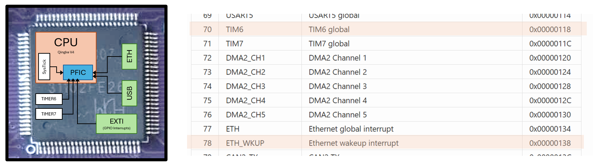
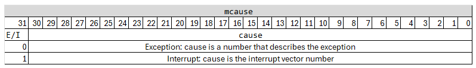
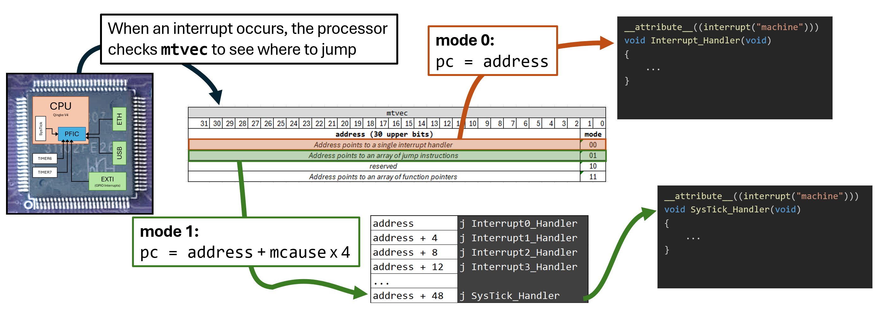
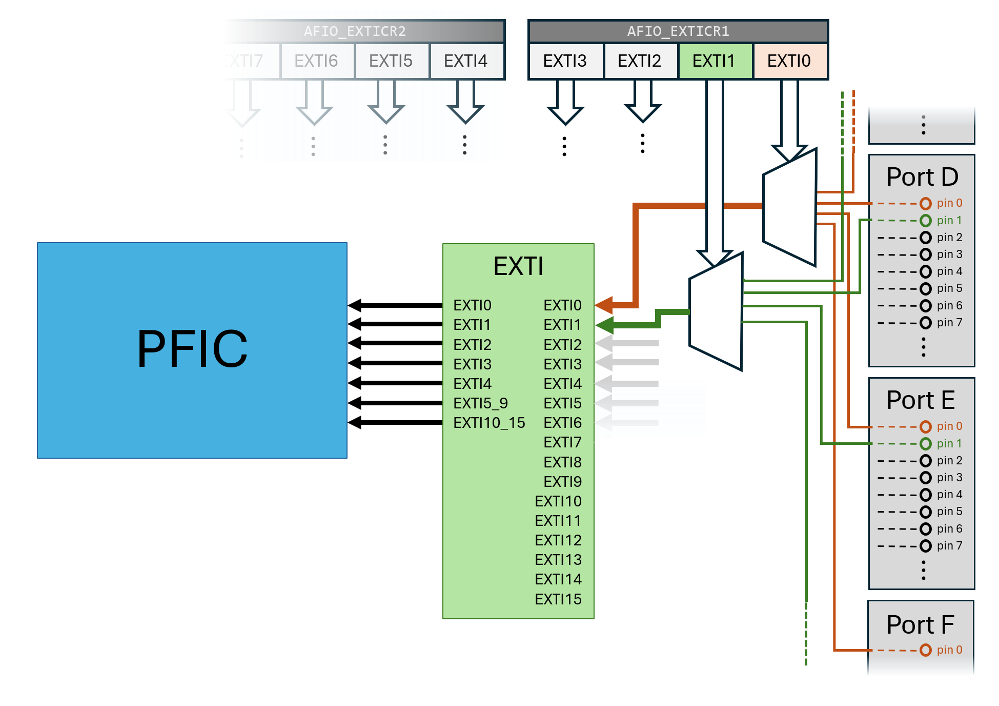
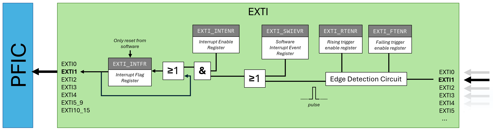

So far we have seen how to interrupt the program when a single, internal, interrupt occurs (SysTick counted to zero). In this lecture we will dive deeper into interrupt handling, and show how we can handle several simultaneous interrupts from modules outside the Qingke processor and finally from interrupts originating from the GPIO pins.
Recall from the previous lecture that every module that can cause an interrupt on the chip will have a hard-coded connection to the Programmable Fast Interrupt Controller (PFIC) module. When, for instance, the “Ethernet Wakeup” signal comes in from the ethernet cable, the ethernet module will signal the PFIC, and the PFIC will (if it has been configured to do so) interrupt the running code and make the processor run an interrupt handler.
Every possible interrupt that can occur has an assigned interrupt vector number which you can find in the QuickGuide.

We will start with an example where we want three LEDs to blink at
different frequencies, f1, f2, and
f3.
Couldn’t we just use SysTick for this? If the frequencies are
f1 = 1Hz, f2 = 2 * f1, and
f3 = 4 * f1, we could create a SysTick interrupt that
triggered at frequency f3 and do:
uint32_t ctr = 0;
void Interrupt_Handler() // Runs at frequency f3
{
toggle_LED3(); // Always toggle LED3 to get frequency f3
if(ctr % 2 == 0) toggle_LED2(); // Toggle every 2:nd time to get frequency f2
if(ctr % 4 == 0) toggle_LED1(); // Toggle every 4:th time to get frequency f1
}This would work, but it is a special case. We want our leds to blink
at any three frequencies. If the frequencies we wanted were
f1 = 1Hz, f2 = 3 * f1, and
f3 = 5 * f1, we would be in trouble because our interrupt
would have to run at a frequency that is the lowest common
denominator: LCD(1,3,5) = 15Hz. Therefore we would
have to interrupt our processor very often, only to increase a counter.
There are tricks for this, but it is much easier and more efficient to
use one timer per LED.
We can set up SysTick, TIMER6, and TIMER7 to generate interrupts at 1Hz, 3Hz, and 5Hz, respectively, like1 this:
// Set up systick for 1 second delay (1Hz)
*systick = (SYSTICK_t){0}; // Clear everything to 0
systick->CMP = 144000000; // Set up to count to one second (assuming 144 MHz clock)
systick->ctrl.clksrc = 1; // Use HCLK (update at full speed, not divided by 8)
systick->ctrl.reload = 1; // Enable reload
systick->ctrl.intenable = 1; // Enable interrupt
systick->ctrl.enable = 1; // Start counting
// Set up timer 6 at 3Hz
*timer6 = (TIMER_t){0}; // Clear everything to 0
timer6->PSC = 9600 - 1; // Timer increases every 9600th clock -> 144Mhz / 9600 = 15kHz
timer6->ATRLR = 5000 - 1; // Generate interrupt every 5000 ticks -> 15kHz / 5000 = 3Hz
timer6->ctrl1.enable = 1; // Enable timer
timer6->DMAINTENR = 1; // Enable update interrupt
// Set up timer 7 at 5Hz
*timer7 = (TIMER_t){0}; // Clear everything to 0
timer7->PSC = 9600 - 1; // Timer increases every 9600th clock -> 144Mhz / 9600 = 15kHz
timer7->ATRLR = 3000 - 1; // Generate interrupt every 3000 ticks -> 15kHz / 3000 = 5Hz
timer7->ctrl1.enable = 1; // Enable timer
timer7->DMAINTENR = 1; // Enable update interruptPrescaler - The two basic timers (TIMER6 and 7) only
have a 16-bit counter, allowing us to count 65536 clocks (~0.5ms) at
full resolution. To be able to count longer times, it also has a
prescaler register (PSC, also 16 bits). The value
in this register says how many clocks should pass between incrementing
the count value. If we set the prescaler value to 100, the count value
would increase every 100th clock cycle, so the timer can run for
65536*100 clocks without overflow.
Note 1: - I lied a little in that previous
paragraph. Since the value 0 would have no real meaning in
the PSC register, the number of clocks it will wait between
increasing the counter is actually PSC+1. The same goes for
the ATRLR (compare) value.
Note 2: - The prescaler does not work properly in the simulator at the moment, so you will have to use the real hardware if you want to play around with this.
Next, we have to tell the PFIC to allow interrupts for all three timers. So, we have to use the interrupt vector number (which we find in the QuickGuide) to calculate which of the PFIC_IENRx registers it resides in, and then set the correct bit in that register. We can do this quite elegantly as:
#define PFIC_IENR ((volatile uint32_t *)(0xE000E000 + 0x100))
...
PFIC_IENR[SYSTICK_IRQ_NUM / 32] |= (1 << (SYSTICK_IRQ_NUM % 32));
PFIC_IENR[TIMER6_IRQ_NUM / 32] |= (1 << (TIMER6_IRQ_NUM % 32));
PFIC_IENR[TIMER7_IRQ_NUM / 32] |= (1 << (TIMER7_IRQ_NUM % 32));Finally, we need to write an interrupt handler, and point
mtvec to that interrupt handler (just as in the previous
lecture):
__attribute__((interrupt("machine")))
void Interrupt_Handler(void)
{
...
}
int main(void)
{
// Set mtvec to address of Interrupt_Handler
__asm volatile ("csrw mtvec, %0" :: "r"(Interrupt_Handler));
...But now what? With this code, all three timers will generate interrupts, and our interrupt handler will run whenever one of them fires, but how do we know which timer triggered the interrupt?
When the processor interrupts the code to run an interrupt handler,
it places the source of the interrupt (the interrupt vector
number from the quickguide) in the CSR register mcause:

To handle the correct timer, we have to first make sure that it really was an interrupt that occurred (and not another exception, like an unaligned memory access), and then do the proper thing depending on which interrupt it was:
__attribute__((interrupt("machine")))
void Interrupt_Handler(void)
{
uint32_t cause;
// The `mcause` register is not directly available to C,
// so we read it with inline assembly.
__asm volatile ("csrr %0, mcause" : "=r"(cause) :: "memory");
if(cause & 0x80000000){ // Check bit 31
// This is an interrupt
cause = cause & 0x7FFFFFFF; // Mask out the MSB
if(cause == SYSTICK_IRQ_NUM){
*GPIOD_OUTDR ^= 0x1; // Toggle LED1
systick->SR = 0; // Acknowledge the interrupt
}
else if(cause == TIMER6_IRQ_NUM){
*GPIOD_OUTDR ^= 0x2; // Toggle LED2
timer6->INTFR = 0; // Acknowledge the interrupt
}
else if(cause == TIMER7_IRQ_NUM){
*GPIOD_OUTDR ^= 0x4; // Toggle LED3
timer7->INTFR = 0; // Acknowledge the interrupt
}
}
else {
// Exception. Freak out.
while(1);
}
}Note that you must acknowledge the basic timer interrupts (just as you must acknowledge a SysTick interrupt) when you have handled it. Otherwise the processor will just run the interrupt handler again, as soon as it is finished.
Another important thing to note here is that even this quite simple interrupt handler becomes quite a large number of instructions (35 machine code instructions when I compiled it). Meanwhile, all we really need to do when we get, e.g., a SysTick interrupt is to flip one bit, acknowledge, and return (5 instructions). This can quickly become a bottleneck when we have to handle many interrupts and the interrupts need to be handled quickly.
It would be much better if the CPU could immediately call a specific interrupt handler, based on the cause of the interrupt, and that is what we will cover next.
So far, we have simply put the address to the interrupt handler into
the mtvec CSR and when an interrupt occurs the processor
has jumped to that address. This is only one of three modes
that the CH32V307 can operate in. We choose the mode using the two least
significant bits of the mtvec register (see image below).
Since all instructions (and therefore, all functions) on our system must
begin at a four-byte aligned address, any valid interrupt-handler
address will have zeroes as its two least significant bits, so, without
thinking about it, we have always chosen mode 0 so
far.
The possible configurations of the two least significant bits are:
mtvec,
i.e: pc = mtvec.mtvec but will then
add 4 x cause to the address (where cause is the
value of the mcause CSR, with the MSB masked out). In other
words: pc = mtvec + 4 * (mcause & 0x7FFFFFFF). This is
called a vectored mode, and we would normally have a jump
instruction at that address (see image below).mtvec with an offset taken from mcause.
pc = M[mtvec + 4 * (mcause & 0x7FFFFFFF)]. This last
mode is discussed further in your workbook, but as it is not a standard
RISC-V mode, we will not explore it further in this course. 2Quiz (advanced, answer in footnote3) - Why was mode 1 chosen instead of mode 3 as the standard way for RISC-V to handle interrupts? Can you think of any case where it can be faster?
We will use mode 1 to make our processor jump directly to the interrupt handler for the specific timer, by placing a list containing jump instructions somewhere in memory.

The remaining question is how to create that list of jump instructions, at some place in memory? The easiest, and most common, way to achieve this is to write the list in an assembly file, and compile it with the program:
.section .text
# Make the (C code) interrupt handlers addresses available to our assembly code
.extern SysTick_Handler
.extern Timer6_Handler
.extern Timer7_Handler
.align 2 # Create a label that is the start of our list in memory
vector_table: # and make sure it is at a 4-byte aligned address
.org vector_table + 12 * 4 # "Move" to the place in memory where we want out SysTick handler
j SysTick_Handler # And place a jump instruction there
.org vector_table + 70 * 4 # "Move" to the place in memory where we want out Timer6 handler
j Timer6_Handler # And place a jump instruction there
.org vector_table + 71 * 4 # etc...
j Timer7_Handler # etc... We do not really care where in memory our vector table is, so we just
let the compiler decide on a place (the label
vector_table), as we do for any variable. Since SysTick is
interrupt number 12, we want the jump instruction that jumps to the
SysTick handler top be at address vector_table + 4 * 12
(because that is where the CPU will jump, when a SysTick interrupt is
triggered). We could achieve this by just leaving
.space 4*12 after the vector_table label and
before the j SysTick_Handler instruction, but it is easier
to use the .org <address> directive. You can think of
this as telling the assembler to “move the cursor” to somewhere in
memory, and that is where the next instruction will be placed.
Finally, we need to put the address of our vector table into
mtvec and set the least significant bit so the processor
knows that it should use mode 1. Since we already have an assembly file,
this is easiest to do with a little assembly function:
init_interrupts:
la t0, vector_table # Address of vector table to t0
ori t0, t0, 1 # Choose `mode 1` by setting the LSB
csrw mtvec, t0 # Write t0 into `mtvec`
retWe can now rewrite our c program so that it has three separate interrupt handlers:
__attribute__((interrupt("machine")))
void SysTick_Handler(void) { ... }
__attribute__((interrupt("machine")))
void Timer6_Handler(void) { ... }
__attribute__((interrupt("machine")))
void Timer7_Handler(void) { ... }
int main()
{
// Configure timers (as before)
...
// Enable interrupts in PFIC (as before)
...
// Set up processor to use vector table:
init_interrupts();
// LEDs will blink frome here on
}It would be reasonable at this point to ask ourselves: “What happens if an interrupt occurs while an interrupt hadler is running?”. The answer is that “it depends” on a lot of things. A RISC-V processor has the capability for nested exceptions, i.e., one exception interrupts another exception handler.
Can an interrupt from one source (e.g. SysTick) interrupt
itself? - No. When the processor starts handling a specific
interrupt, it sets the corresponding active bit in the
Interrupt Active register (PFIC_IACTR) register.
If the same interrupt should fire again, the processor will detect that
it is active and will not start the handler again immediately. Instead,
it will set the corresponding bit in the Interrupt Pending
register (PFIC_IPR).
When the interrupt handler returns, the active bit will be cleared. If the processor finds that a new interrupt is pending, it will handle that interrupt before returning to the program code.
Thus, there is no risk of an interrupt interrupting itself: The interrupt handler will always complete before another interrupt of the same type is handled. What can happen, if you, e.g., set the SysTick frequency too fast, is that the systick interrupt handler is always pending, and the processor never returns to the program code. We say that the program is starved.
Can a fault (e.g. unaligned memory access) interrupt a running interrupt handler? - Yes. An exception caused by the currently running instruction (called a synchronous exception) will interrupt the interrupt handler. This gives the processor a chance to transfer control to an exception handler, if an interrupt handler behaves badly.
Can another interrupt (e.g. Timer6) interrupt a running interrupt handler (e.g. SysTick)? - The RISC-V ISA does not require this to be possible, so on many architectures the new interrupt will be “pending” and its handler will run directly after the current handler returns.
On the CH32V307, different interrupt sources can have different
priorities (set in the IPRIO registers). If an
interrupt with a higher priority occurs while a lower-priority interrupt
handler is running, the new interrupt handler will run immediately,
pre-empting the current one. The pre-empted handler will then continue
and complete once the higher-priority handler returns.
What if a fault occurs while a fault-handler is running? - Infinite exception loop. Crash and Burn. Don’t do this.
We will not delve much deeper into nested interrupts in this course, but it is worthwhile understanding that nested interrupts and priorities can be quite important. Let’s say we have a program where SysTick is used to output signal (perhaps a clock signal, or a note to a speaker) with a specific frequency. Meanwhile, Timer6 is used to turn on the night-light every evening. If the interrupt handler for Timer6 run a few milliseconds later than intended, that is usually acceptable. But if the SysTick interrupt handler is delayed by even a few nanoseconds, that might mean that the clock signal falls out-of-sync with other parts of the system or, even worse, the played note becomes slightly flat!
The mechanism for nested interrupts does not have to be very complicated at all, on RISC-V. Since an interrupt handler is already handled differently than normal functions, and always saves all registers it might modify on the stack, interrupts can in principle interrupt each other arbitrarily, as long as there is sufficient stack space available.
On the CH32V307, there is a special hardware stack, that allows up to three nested interrupt handlers without using the in-memory stack at all. This significantly reduces interrupt latency and enables extremely fast interrupt response times.
Finally, we will see how we can configure an interrupt for a GPIO pin. We will extend our program so that (in addition to the timed LEDs) another LED will turn on when we flick a switch connected to a GPIO pin, and of when we flick it back. We will use interrupts for this as well, so the processor is free to run any application we might want.
On the CH32V307, any GPIO pin can cause an interrupt, but we are not free to use the pins entirely arbitrarily. The image below illustrates the path from a physical GPIO pin to the interrupt signal sent to the PFIC (and on to the processor):

As an example, we will connect a switch to GPIO Port E, pin 1. It would of course be possible for a microcontroller to connect every single GPIO pin on every port to a specific interrupt line, but this would be very resource intensive and costly. On the CH32V307, pin 1 on all ports (A-F) is connected to a MUX that will only let one of the signals through. This means that we cannot trigger an interrupt from pin 1 on Port D and pin 1 on Port E; we have to choose.
To decide which port gets to forward the signal from a specific pin,
we use the Alternative Function I/O (AFIO) module, and
specifically the AFIO_EXTICR1 - AFIO_EXTICR4
registers (see QuickGuide). These are 16 bit registers and every
register contains four groups of four bits, where each group decides
which port should forward a specific pin.
External interrupt configuration register 1
(AFIO_EXTICR1)
| 31 | 30 | 29 | 28 | 27 | 26 | 25 | 24 | 23 | 22 | 21 | 20 | 19 | 18 | 17 | 16 | 15 | 14 | 13 | 12 | 11 | 10 | 9 | 8 | 7 | 6 | 5 | 4 | 3 | 2 | 1 | 0 | EXTI3 | EXTI2 | EXTI1 | EXTI0 |
|---|
Since we want an interrupt to fire for pin 1 in GPIO port E, we will
set the four bits corresponding to EXTI1, in
AFIO_EXTICR1, to 4:
#define AFIO_EXTICR1 ((volatile uint16_t *)0x40010008)
int main() {
...
// Configure AFIO to allow pin1 interrupts for port E
*AFIO_EXTICR1 &= 0xFF0F; // Zero the corresponding bits
*AFIO_EXTICR1 |= 0x0040; // Set EXTI1 to 4 (Port E)
...
}If the value from our pin is chosen as an interrupt source in the
AFIO module, it will be sent on to the EXTI
module. This is where we can decide if and when a change in signal value
should cause an interrupt. The behaviour of this module is illustrated
in the image and QuickGuide snippet below:

| offset | 31 | 30 | 29 | 28 | 27 | 26 | 25 | 24 | 23 | 22 | 21 | 20 | 19 | 18 | 17 | 16 | 15 | 14 | 13 | 12 | 11 | 10 | 9 | 8 | 7 | 6 | 5 | 4 | 3 | 2 | 1 | 0 | Register |
|---|---|---|---|---|---|---|---|---|---|---|---|---|---|---|---|---|---|---|---|---|---|---|---|---|---|---|---|---|---|---|---|---|---|
| 0x00 | INTENR | ||||||||||||||||||||||||||||||||
| 0x04 | EVENR | ||||||||||||||||||||||||||||||||
| 0x08 | RTENR | ||||||||||||||||||||||||||||||||
| 0xC | FTENR | ||||||||||||||||||||||||||||||||
| 0x10 | SWIEVR | ||||||||||||||||||||||||||||||||
| 0x14 | INTFR | ||||||||||||||||||||||||||||||||
The first thing to notice is that the incoming signal is connected to
an edge detection curcuit. This circuit will output a short
pulse of 1 when it detects that the incoming
signal changes between 0 and 1, or from 1 to 0. As long as the input
signal is a steady 0 or 1, the circuit outputs 0. We can configure the
edge-detection circuit to react on rising edges (the value goes
from 0 to 1) or falling edges (the value going from 1 to 0), or
both, by writing the EXTI_RTENR and EXTI_FENR
resgisters.
In all the EXTI registers, each bit affects a single input line (the signals coming from pins 0-15). We want our interrupt to fire whenever we flick the switch connected to pin 1, so we will configure the edge-detection circuit to react on both rising and falling triggers:
*EXTI_RTENR |= 0b10; // Generate a pulse when pin1 goes from 0 to 1
*EXTI_FTENR |= 0b10; // Generate a pulse when pin1 goes from 1 to 0Note: You may have noticed that there are 20 bits in each of the EXTI registers, but only 16 GPIO pins (per port). This is because there are other external signals, like USB Wakeup and Power Voltage Detector signals, that can trigger interrupts in the same way. We will not talk more about these in the course.
Next, we see that the pulse is ORed with the corresponding bit in the Software Interrupt Event Register (SWIER). This register is normally all zeroes, but by writing a one to either of the bits we can force an interrupt for that pin, regardless of the actual value on the pin.
Then, the pulse is ANDed with the corresponding bit in the
EXTI_INTENR register. This allows us to turn interrupts off
for a specific pin, by setting the corresponding bit to zero. Since we
only want to allow interrupts from pin 1, we configure this in our
code:
*EXTI_INTENR = 0b10; // Enable interrupts only for pin 1If the input pin has changed its value, and triggered a pulse in the
edge-detection circuit that has made it past this AND gate, an interrupt
request should be sent to the PFIC. If another pulse appears,
before this interrupt has been handled, we do not want to send
another interrupt request to the PFIC. Therefore, the pulse is finally
latched into the EXTI_INTFR register. That is, a
single pulse will set the corresponding bit in EXTI_INTFR
to 1, but that bit will stay set until our interrupt handler
explicitly zeroes it in the interrupt handler. This way we ensure that
multiple edges occurring before the handler runs collapse into a single
pending interrupt, guaranteeing reliable event detection without
overwhelming the interrupt controller.
Finally, we should note that only pins 0 to 4 have their own
connections to the PFIC. If an interrupt is triggered on either
of pins 5-9, the same interrupt line in the PFIC will be
triggered. In these cases, our interrupt handler code must read the
EXTI_INTFR register to see which pin actually triggered the
interrupt.
That is all that is really new about GPIO interrupts, but for completeness, let’s go through the final things your program needs to respond to a GPIO interrupt.
For any signal to make it through to the EXTI module, and then PFIC, we have to configure the pin as an input pin. If we use our DIP-switch as the input device, we need to configure it as pull-down:
GPIOE_CFGLR = 0x00000080; // Configure pin 1 as input and pull downJust as when we set up interrupt handlers for our timers, we need to
enable the interrupt in the PFIC. We can see in the vector table in the
QuickGuide that EXTI1 has interrupt vetor number 22, so we
write:
#define EXTI1_IRQ_NUM 23
...
PFIC_IENR[EXTI1_IRQ_NUM / 32] |= (1 << (EXTI1_IRQ_NUM % 32));Then we need an interrupt handler that takes care of our new interrupt.
__attribute__((interrupt("machine")))
void EXTI1_Handler(void)
{
uitn32_t current_value = *GPIOE_INDR & 0b10; // Read the current value of the switch
*GPIOD_OUTDR &= ~0x8; // Zero the fourth LED
*GPIOD_OUTDR |= current_value; // Set it to 1 if the switch is on, 0 otherwise
*EXTI_INTFR |= 0b10; // Acknowledge the interrupt (zeroes the corresponding bit in EXTI_INTFR)
}One thing that may surprise you is that the interrupt is acknowledged
by writing 1 to the corresponding bit, even though the
actual result is that the bit is zeroed 4.
Finally, we add a single jump instruction at the right place in our vector table:
.align 2
vector_table:
.org vector_table + 12 * 4
j SysTick_Handler # IRQ 12: SysTick Handler
.org vector_table + 22 * 4
j EXTI1_Handler # IRQ 22: EXTI1 handler
.org vector_table + 70 * 4
j Timer6_Handler # IRQ 70: Timer 6 Handler
.org vector_table + 71 * 4
j Timer7_Handler # IRQ 71: Timer 7 Handler And that’s it! When running the program we will now see three LEDs blinking at different frequencies and a fourth LED can be turned on and off by a switch, all handled by interrupt routines, so the CPU is free to run whatever other code it wants to.
We covered the basic timers and prescalers in a previous lecture, so go there and do the exercises if this looks confusing to you.↩︎
This is how vectored interrupts are handled on ARM processors, and it is implemented in this microcontroller by WCH to ease the transition for ARM developers.↩︎
If you need an interrupt to be handled extremely quickly, you can place its instructions directly into the vector table. This only works if the instructions do not overwrite another entry that you need. Useful for very fast (MHz range) signals.↩︎
Interrupt flags are cleared by writing 1 so that software can acknowledge an event atomically, without risking the loss of new events occurring at the same time.↩︎